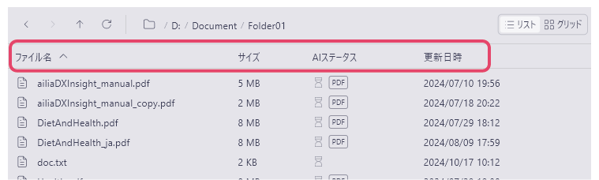
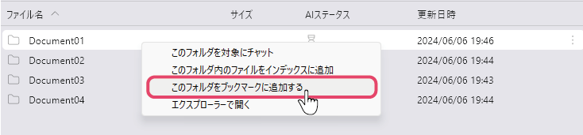
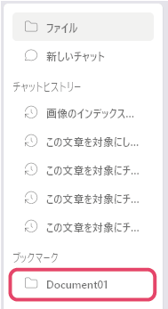
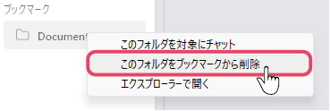

ファイルビューの操作
ファイルの並び順を変える
ファイルビュー上部に並んでいる項目名をクリックすると、ファイルの並び順が変わります。

ファイル名で並び替え
「ファイル名」をクリックすると、名前順(A-Z/Z-A)に並びます。ファイルサイズで並び替え
「サイズ」をクリックすると、サイズが大きい/小さい順に並びます。インデックス登録の有無で並び替え
「AIステータス」をクリックすると、インデックス登録済/未登録で並びます。更新日時で並び替え
「更新日時」をクリックすると、ファイルの更新日時の新しい/古い順に並びます。
ファイルの表示方法を変える
ファイルビューの右上にある表示モードボタンをクリックすると、ファイルの表示方法（リスト表示/グリッド表示）を変えることができます。
グリッド表示では、画像ファイルのサムネイルがグリッド状に並びます。
フォルダをブックマークに追加する
頻繁に開くフォルダをブックマークに追加することができます。
- ブックマークに追加したいフォルダにカーソルを合わせ右クリックし、「このフォルダをブックマークに追加する」を選択します。
 - 左のサイドバーにあるブックマークにフォルダが追加されます。

フォルダをブックマークから削除する
この操作ではフォルダ本体の削除は行われません。
- 左サイドバーにあるブックマーク内の、削除したいフォルダを右クリックし、「このフォルダをブックマークから削除」を選択します
 - ブックマークからフォルダが削除されます。